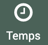
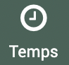

Temps
Les temps sont necessairement rattachés aux fiches, ils peuvent être ajoutés de plusieurs façon :
En remplissant un formulaire
En faisant un import de tableur
En important des feuilles de temps via fichier .ics
En remplissant des semaines types (ajout hebdomadaire)
En paramétrant une synchronisation avec un autre agenda (synchronisation automatique ou manuelle).
Feuilles de temps
 La liste des feuilles de temps s’affichent par défaut en vue calendrier avec un double filtre temps passés et utilisateur courant. Pour avoir accès à la vue tableau il faut cliquer sur
La liste des feuilles de temps s’affichent par défaut en vue calendrier avec un double filtre temps passés et utilisateur courant. Pour avoir accès à la vue tableau il faut cliquer sur  en haut et sur
en haut et sur  pour revenir en vue calendrier. Les requêtes et filtres sont les mêmes en vue calendrier et liste.
pour revenir en vue calendrier. Les requêtes et filtres sont les mêmes en vue calendrier et liste.
Vue Calendrier
On peut choisir une vue Mois, Semaine ou Jour.
Et faire défiler le temps en cliquant sur les flèches ou revenir aujourd’hui.

Pour ajouter une feuille de temps en vue calendrier on peut cliquer directement sur le calendrier, le formulaire d’ajout s’affiche à la date cliquée.
Vue Liste
Les fonctionnalités de tableau et d’ajout sont détaillées dans la partie Fonctionnalités générales.
Dans cette vue liste il y a quelques particularités de tableau :
En cochant la case des lignes, on a la possibilité de supprimer plusieurs feuilles de temps d’un coup, l’icône
 apparaît au dessus des cases à cocher
apparaît au dessus des cases à cocherEn cochant la case des lignes on a la possibilité de modifier plusieurs lignes d’un coup l’icône
 apparaît au dessus des cases à cocher, on peut modifier le type (passé, prévu ou absence) et le nombre d’heures. (Il faut cocher la case Utiliser de chaque champ si on veut les modifier).
apparaît au dessus des cases à cocher, on peut modifier le type (passé, prévu ou absence) et le nombre d’heures. (Il faut cocher la case Utiliser de chaque champ si on veut les modifier).Dans ce module, il y a la particularité d’avoir accès aux mots clés et référentiels reliés aux fiches auxquelles sont reliées les feuilles de temps. Donc si on préfère ajouter les mots clés au niveau des fiches plutôt qu’au niveau de chaque feuille de temps, on peut les retrouver en sélectionnant les colonnes correspondantes (pas de filtre possible mais on peut voir à quels mots clés et référentiels sont reliées les fiches des feuilles de temps)
Formulaire ajout feuille de temps
Les champs utilisateur, fiche rattachée, dates de début et de fin, nombre d’heures et type de temps sont obligatoires.
Le champs Utilisateur est rempli par défaut avec l’utilisateur courant mais on peut le modifier
Le champ Fiche permet d’attribuer le temps à une fiche
On peut renseigner les dates de début et de fin en les écrivant ou en cliquant sur le
pour choisir un jour.Une fois les dates de début et de fin remplies, en appuyant sur , le nombre d”heures est calculée automatiquement (différence entre date de début et de fin), s’il n’est pas le bon, on peut insérer un nombre différent. Le nombre d’heures peut être différent de la différence entre début et fin (moins élevé comme plus élevé).
Le champ Type permet de choisir entre temps passé, temps prévu et temps d’absence.
En choisissant temps d’absence, un autre champ s’affiche avec le Type d’absence s’il a été paramétré. Il peut être paramétré dans
 > .
> .Des mots clés peuvent être ajoutés aux feuilles de temps, la case « Feuille de temps » doit être cochée dans le mot clé
Des Territoires peuvent aussi être ajoutés aux temps
Avertissement
Si le pramétrage des types d’absence n’a pas été paramétré, l’ajout des temps d’absence ne fonctionnera pas.
Formulaire import avec fichier .ics
En cliquant sur  , dans ce module on peut aussi ajouter des feuilles de temps en important un ficher .ics (aussi disponible depuis la partie synchronisation du module temps). C’est le même principe que pour les synchronisations mais il faut remplir les champs à chaque import. Si vous faites cet import couramment et que vous pouvez partager un lien d’agenda public, il sera plus pratique de paramétrer une synchronisation.
, dans ce module on peut aussi ajouter des feuilles de temps en important un ficher .ics (aussi disponible depuis la partie synchronisation du module temps). C’est le même principe que pour les synchronisations mais il faut remplir les champs à chaque import. Si vous faites cet import couramment et que vous pouvez partager un lien d’agenda public, il sera plus pratique de paramétrer une synchronisation.
Les fichiers .ics peuvent être exportés depuis vos agendas type google, outlook ou autres.
Les temps dans les agendas doivent pouvoir être reliés aux fiches, ce sont les champs Jointure à la fiche qui permettent de les relier :
Champ utilisé correspond au champ dans votre agenda ou il y aura l’élément de rattachement à la fiche : titre, description, localisation, tags pour Zimbra
Caractère(s) d’entourage correspond aux caractères entourant l’élément de rattachement à la fiche : crochet [] ou hashtag # ou aucun. Il est préférable de choisir les [].
Champs de jointure fiche correspond au champ dans la fiche qui permet de faire le rattachement, il doit être un champ unique pour chaque fiche : Code, Titre, Champ personnalisé (personalisé dans
>  ), Aucun (ne rattachera pas les fiches)
), Aucun (ne rattachera pas les fiches)
Avertissement
Catégories pour Outlook ne fonctionnent plus car Outlook ne les exporte plus.
Note
Si le hashtag est utlisé comme caractère d’entourage, il ne peut pas y avoir d’espace dans l’élément rattaché car le rattachement s’arrête au premier espace. Si Aucun est utilisé comme caractère d’entourage, l’élément de rattachement devra être présent seul dans le titre, localisation ou tags et pourra être accompagné d’autres éléments dans la description.
Dans les agendas
Donc dans les agendas, il faut indiquer un élément de rattachement à la fiche avec les caractères d’entourage.
Vous pouvez également indiquer les mots clés et territoires dans vos agendas. Pour les mots clés, vous pouvez les indiquer dans la description avec des caractères d’entourage ou non si en un seul mot, mais si le mot clé est en plusieurs mots il faudra utiliser les crochets. Dans le cas des territoires, il faut les insérer dans la partie localisation/lieu du rendez-vous.
Note
Si le champs utilisé pour la jointure à la fiche est localisation/lieu, il ne pourra pas être utilisé pour rattacher les territoires.
Exemple de temps inséré dans l’agenda google pour import :
Dans EVA
Remplir champ utilisé, caractère(s) d’entourage et champ de jointure (champs détaillés plus haut).
Pour l’exemple ci-dessus :
La période à synchroniser permet de choisir la partie du calendrier à importer dans EVA.

Note
Si une période a été importée deux fois, les temps ne seront pas importés deux fois s’ils n’ont pas été modifiés entre temps.
Cliquer sur Importer.
Indiquer l’utilisateur à qui rattacher les temps (un seul possible), puis vérifier les temps importés dans le tableau en dessous :
Le type sera par défaut temps passé mais on peut le modifier ici
Si la fiche n’a pas pu être trouvé dans le rattachement automatique, vous pouvez la rattacher ici
Vérifier les heures de début et de fin et le nombre d”heures total
Vérifier les mots clés et territoires
Dans l’exemple, voici la ligne qui apparaît :

Seul les temps rattachés à une fiche seront importés, donc si vous avez des temps personnels indiqués dans votre agenda (type RDV médicaux) s’ils ne contiennent pas de code fiche, il ne seront pas conservés.
Pour les mots clés et territoires, on peut les rajouter dans cette interface également :
soit sur chaque ligne en cliquant sur ou pour en ajouter ou remplacer
soit pour éditer plusieurs lignes avec les mêmes mots clés ou territoires, cocher les cases des lignes concernées puis en haut du tableau cliquer sur ou pour ajouter (ou remplacer) les mêmes mots clés ou territoires sur toutes les lignes cochées
Une fois importée, vous pouvez vérifier la ligne dans l’onglet temps de la fiche associée, par exemple (mode d’intervention est le mot clé) :
Ajout hebdomadaire

{kind=link}
{kind=link}
{kind=link}
{kind=link}
{kind=link}
{kind=link}
{kind=link}
{kind=link}
{kind=link}
{kind=link}
{kind=link}
{kind=link}
{kind=link}
L’ajout hebdomadaire permet d’ajouter toute la semaine de temps d’un coup. C’est particulièrement utile si vous avez des semaines qui se ressemblent.
Lorsque l’on appuie sur ajouter une ligne, on peut ajouter des feuilles de temps avec le même titre, la même fiche associée, le même type (passé, prévu, absence), les mêmes mots clés et territoires pour toute la semaine. On peut choisir un nombre d’heure différent pour chaque jour.
{kind=link}
Pour les mots clés et territoires, on peut les rajouter de deux façons :
soit sur chaque ligne en cliquant sur ou pour en ajouter, remplacer ou enlever
soit pour éditer plusieurs lignes avec les mêmes mots clés ou territoires, cocher les cases des lignes concernées puis en haut du tableau cliquer sur ou pour ajouter (ou remplacer ou enlever) les mêmes mots clés ou territoires sur toutes les lignes cochées
La ligne peut être supprimée grâce au bouton poubelle rouge en bout de ligne.
Sur la partie du haut de l’interface :
{kind=link}
On peut choisir la requête de fiche que l’on souhaite afficher, ces requêtes correspondent à celles enregistrées dans le module fiche. Ceci permet d’afficher toutes les fiches qui répondent à cette requête si on a besoin d’ajouter du temps pour un certain type de fiche.
On peut faire défiler les semaines concernés par l’ajout
On peut choisir l’utilisateur concerné par l’ajout hebdomadaire (par défaut utilisateur courant)
En cliquant sur après avoir calibré une semaine, on peut sauvegarder cette semaine en appuyant sur « + enregistrer la semaine » (il faut recharger la page après pour la voir apparaître). Cela permet de pouvoir appliquer des modèles de semaines type, car en cliquant sur le nom de la semaine enregistrée, on peut ensuite la réappliquer.
Pour enregistrer les feuilles de temps, cliquer sur
 .
.
{kind=link}
En dessous s’affiche le temps passé déjà renseigné pour la semaine affichée, s’il y en a (Historique temps passé).
Synchronisations
{kind=link}
La synchronisation est utile pour importer automatiquement plusieurs feuilles de temps depuis votre agenda. On peut paramétrer des synchronisations automatiques ou choisir de lancer la synchronisation quand on le souhaite. Le fonctionnement des synchronisations est similaire au fonctionnement des imports de ficher .ics détaillé plus haut.
Les fonctionnalités de tableau et d’ajout sont détaillées dans la partie Fonctionnalités générales.
Dans EVA
{kind=link}
Il faut donner un titre à la synchronisation et ajouter le lien qui permettra de récupérer les données. Ce lien peut être trouvé dans les paramètre de partage de votre boîte mail (sous le nom d’adresse privée ou lien de partage, en .ics ou .ical…).
Choisissez ensuite le type en fonction de votre agenda (Google, Phénix, Zimbra, Outlook) et votre fuseau horaire.
Les temps dans les agendas doivent pouvoir être reliés aux fiches, ce sont les champs Jointure à la fiche qui permettent de les relier :
Champ utilisé correspond au champ dans votre agenda ou il y aura l’élément de rattachement à la fiche : titre, description, localisation, tags pour Zimbra
Caractère(s) d’entourage correspond aux caractères entourant l’élément de rattachement à la fiche : crochet [] ou hashtag # ou aucun. Il est préférable de choisir les [].
Champs de jointure fiche correspond au champ dans la fiche qui permet de faire le rattachement, il doit être un champ unique pour chaque fiche : Code, Titre, Champ personnalisé (personalisé dans
> ), Aucun (ne rattachera pas les fiches)
Avertissement
Catégories pour Outlook ne fonctionnent plus car Outlook ne les exporte plus.
Note
Si le hashtag est utlisé comme caractère d’entourage, il ne peut pas y avoir d’espace dans l’élément rattaché car le rattachement s’arrête au premier espace. Si Aucun est utilisé comme caractère d’entourage, l’élément de rattachement devra être présent seul dans le titre, localisation ou tags et pourra être accompagné d’autres éléments dans la description.
Dans les agendas
Donc dans les agendas, il faut indiquer un élément de rattachement à la fiche avec les caractères d’entourage.
Vous pouvez également indiquer les mots clés et territoires dans vos agendas. Pour les mots clés, vous pouvez les indiquer dans la description avec des caractères d’entourage ou non si en un seul mot, mais si le mot clé est en plusieurs mots il faudra utiliser les crochets. Dans le cas des territoires, il faut les insérer dans la partie localisation/lieu du rendez-vous.
Note
Si le champs utilisé pour la jointure à la fiche est localisation/lieu, il ne pourra pas être utilisé pour rattacher les territoires.
Exemple de temps inséré dans l’agenda google pour import :
Dans EVA
Remplir champ utilisé, caractère(s) d’entourage et champ de jointure (champs détaillés plus haut).
Pour l’exemple ci-dessus :
Il est ensuite possible d” enregistrer la synchronisation telle quelle ou bien de paramétrer la partie de synchronisation automatique.
Dans ce cas il faudra indiquer l”utilisateur auquel appartient le calendrier à synchroniser et la cadence de synchronisation : quotidienne, hebdomadaire, mensuelle ou trimestrielle puis enregistrer.
{kind=link}
Note
Pour les synchronisations automatique,le logiciel vérifie chaque jour la dernière date de synchronisation (manuelle ou automatique), si elle est plus ancienne que la cadence cible, la synchronisation est lancée.
Dans les deux cas (synchronisation automatique remplie ou non), on peut lancer la synchronisation manuellement depuis le tableau des synchronisations, en cochant la synchronisation à lancer et en cliquant sur en haut du tableau.
{kind=link}
Il faudra alors choisir la période à synchroniser et l”utilisateur concerné et cliquer sur synchroniser.

Vérifier ensuite les temps importés dans le tableau en dessous :
Le type sera par défaut temps passé mais on peut le modifier ici
Si la fiche n’a pas pu être trouvé dans le rattachement automatique, vous pouvez la rattacher ici
Vérifier les heures de début et de fin et le nombre d”heures total
Vérifier les mots clés et territoires
Dans l’exemple, voici la ligne qui apparaît :
Seul les temps rattachés à une fiche seront importés, donc si vous avez des temps personnels indiqués dans votre agenda (type RDV médicaux) s’ils ne contiennent pas de code fiche, il ne seront pas conservés.
La Description de votre rendez-vous est aussi récupérée et insérée dans le champs Description.
Pour les mots clés et territoires, on peut les rajouter dans cette interface également :
soit sur chaque ligne en cliquant sur ou pour en ajouter ou remplacer
soit pour éditer plusieurs lignes avec les mêmes mots clés ou territoires, cocher les cases des lignes concernées puis en haut du tableau cliquer sur ou pour ajouter (ou remplacer) les mêmes mots clés ou territoires sur toutes les lignes cochées
Une fois importée, vous pouvez vérifier la ligne dans l’onglet temps de la fiche associée, par exemple (mode d’intervention est le mot clé) :
Synchronisations des absences
Les temps d’absences peuvent être paramétrés dans le module > .
En cliquant sur le  , on peut ajouter des temps d’absences avec une abbréviation (Lettres initiales).
, on peut ajouter des temps d’absences avec une abbréviation (Lettres initiales).

Avertissement
Le logiciel reconnaît les noms complets et pas les abbréviations, il faut que ces noms soient sans espace pour qu’ils puissent être reconnu. Par exemple : écrivez plutôt congés_payés plutôt que congés payés.
{kind=link}
Dans les agendas
Lorsque l’on créé un temps d’absence dans l’agenda, il faut bien indiquer, le type d’absence dans le titre du rendez-vous et indiquer le code la fiche comme précédemment.
{kind=link}
Note
Certains parcs ont créé une fiche absence à laquelle ils rattachent tous les temps d’absence pour plus de simplicité.
Dans EVA
La seule différence avec les paramétrages précédents est la suivante : Il faut cocher la case Analyser le titre dans les paramètres de synchronisation.
{kind=link}
Avertissement
Attention, quand on coche la case « analyser le titre », tous les titres vont être analyser (pas seulement temps d’absence) et ça peut prendre du temps si jamais on a des titres à rallonge, donc il faut encourager à ne pas avoir des titres complexes dans les agendas pour ne pas surcharger le serveur si possible.
Au moment de la synchronisation, les événements vont remonter avec le type temps d’absence et le bon type d’absence automatiquement.
{kind=link}
Ces temps d’absences peuvent être utilisés par la suite dans les exports temps, par exemple pour les exports life pour justifier les absences et leur type.
Avertissement
Si un temps d’absence est paramétré sur la journée complète et non sur une plage horaire (comme cela peut arriver pour une semaine de congés par exemple), il faudra bien corriger dans EVA le nombre d’heure car EVA assignera 24h par journée.
Exports temps
Un type d’export temps au format tableur est paramétré par défaut dans le menu des temps, mais on peut également paraméter ses propres exports temps dans le sous-menu . Pour des exports temps encore plus poussés (type export Life), il faudra se référer à l’assistance pour qu’ils soient paramétrés en base de données.
{kind=link}
Export par défaut
L’export par défaut exporte un tableur des feuilles de temps sélectionnées dans le module temps, avec une ligne pour chaque feuille de temps et les colonnes affichées à l’écran au moment de l’export.
Avertissement
Le type apparaît en anglais dans l’export (temps passé = done, temps prévu = target, temps d’absence = absence).
Export à paramétrer
Les exports paramétrables permettent de regrouper les temps par fiches et par période.
Dans le formulaire d’export temps les champs sont les suivants :
Nom : donnez un nom à votre export pour le retrouver dans la liste par la suite
Orientation : Portrait ou Paysage. Portrait exporte les dates sur les lignes et les fiches sur les colonnes et Paysage l’inverse. En Paysage, les fiches étant des lignes, il y a une ligne pour chaque fiche et une ligne en plus pour les fiche parent qui regroupe tous les temps des fiches enfants.
Nombre d’heures par jour : dans EVA, les temps sont ajoutés à l’heure, si on préfère avoir le décompte en nombre de jour on peut indiquer la conversion ici
Coût horaire brut : indiquer le coût ici, c’est un champ obligatoire mais qui ne sera pas forcément exporter (en fonction du choix suivant)
Total en : Heures, Jours ou Coût. Choisir ici comment indiquer le total, cela aura un effet sur le total indiqué sur la dernière colonne et la dernière ligne
Grouper par : Années, Mois, Semaines, Jours. Choisir ici comment regrouper les temps, cela aura un effet sur le regroupement des temps et donc le nombre de dates affichées.
Trier les fiches par : Nom ou Code. Par Nom les fiches seront triées par ordre alphabétique du nom des fiches, par Code, les fiches seront triées par ordre alphabétique de leur code.
Ajouter les jours manquants : Si la case est cochée et celle de l’affichage du mois complet ne l’est pas, les jours où il y a zéro heure renseignée seront affichés dans l’affichage par jour
Afficher les mois complets : Si la case est cochée et celle de l’affichage des jours manquants ne l’est pas, les jours où il y a zéro heure renseignée seront affichés dans l’affichage par jour
Commencer le 1er janvier et terminer le 31 décembre : Si la case n’est pas coché, la première et dernière date de l’export dépendra des feuilles de temps présentes dans l’export, si elle est cochée elle commencera au premier janvier et terminera au 31 décembre.
Note
L’export paramétré exporte tous les temps qui résulte des filtres, peu importe s’ils ont été cochés ou non ou s’ils ont été effacés avec la gomme. Les années exportées dépendront des feuilles de temps présentes dans l’export.